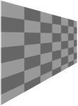

(PECL imagick 2 >= 2.0.1, PECL imagick 3)
Imagick::distortImage — Distorts an image using various distortion methods
$method, array $arguments, bool $bestfit): bool
Distorts an image using various distortion methods, by mapping color
lookups of the source image to a new destination image usually of the same
size as the source image, unless 'bestfit' is set to true.
If 'bestfit' is enabled, and distortion allows it, the destination image is adjusted to ensure the whole source 'image' will just fit within the final destination image, which will be sized and offset accordingly. Also in many cases the virtual offset of the source image will be taken into account in the mapping.
此方法在Imagick基于ImageMagick 6.3.6以上版本编译时可用。
methodThe method of image distortion. See distortion constants
argumentsThe arguments for this distortion method
bestfitAttempt to resize destination to fit distorted source
成功时返回 true。
错误时抛出 ImagickException。
示例 #1 Using Imagick::distortImage():
Distort an image and display to the browser.
<?php
/* Create new object */
$im = new Imagick();
/* Create new checkerboard pattern */
$im->newPseudoImage(100, 100, "pattern:checkerboard");
/* Set the image format to png */
$im->setImageFormat('png');
/* Fill new visible areas with transparent */
$im->setImageVirtualPixelMethod(Imagick::VIRTUALPIXELMETHOD_TRANSPARENT);
/* Activate matte */
$im->setImageMatte(true);
/* Control points for the distortion */
$controlPoints = array( 10, 10,
10, 5,
10, $im->getImageHeight() - 20,
10, $im->getImageHeight() - 5,
$im->getImageWidth() - 10, 10,
$im->getImageWidth() - 10, 20,
$im->getImageWidth() - 10, $im->getImageHeight() - 10,
$im->getImageWidth() - 10, $im->getImageHeight() - 30);
/* Perform the distortion */
$im->distortImage(Imagick::DISTORTION_PERSPECTIVE, $controlPoints, true);
/* Ouput the image */
header("Content-Type: image/png");
echo $im;
?>
以上例程的输出类似于：
